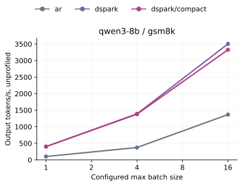
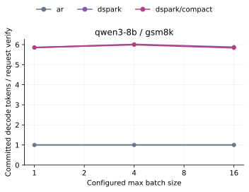
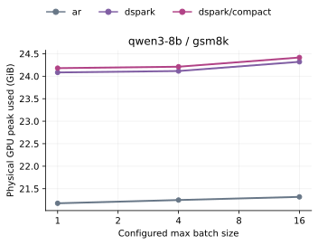
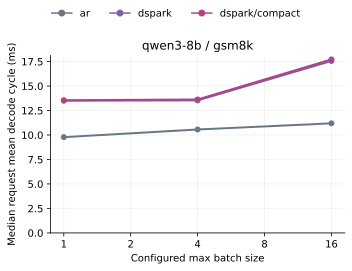
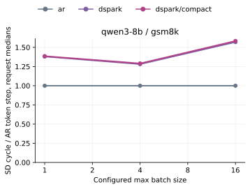
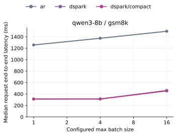

← 报告索引Parallel SD / SGLang：refine03_adaptive
RTX 5090 · 原始真实输入 token IDs · BF16 target · FA4 · 同一 SGLang Engine
探索性实验，不是论文 leaderboard。此报告只收录已成功结束的 cell：12/12；campaign 当前状态：success。阶段：adaptive。未完成项没有填充数据。
decode CUDA Graph、overlap scheduler 开启；初始 cohort 的 prefill graph 关闭；prefix reuse 关闭。固定输出忽略 EOS，用于隔离资源扩展，不能当作自然停止的应用吞吐。加载、编译、warmup 和 flush-cache 不计入吞吐窗口。
每个 cell 使用相同输入与输出上限，metadata 保存请求时间、返回 token IDs、实际 spec verify 次数和 device memory 采样。AR 前后两次用于检查漂移；speedup 分母是匹配 AR cell median 的中位数。任何 BF16 token 分歧均保留，不据此声称逐 token 一致或已验证答案质量。
Batch size 扩展规律
 Throughput relative to paired AR
Throughput relative to paired AR
Output tokens/s, unprofiled
Committed decode tokens / request verify
Physical GPU peak used (GiB)
Median request mean decode cycle (ms)
SD cycle / AR token step, request medians
Median request end-to-end latency (ms)检查 576 次请求返回：输出长度、重复计时和吞吐算式一致；0 个 cell 的不同重复出现 token 分歧。重复一致性 · 跨 BS 一致性 · 聚合 CSV。这些检查不是答案质量评测。
8 个跨 BS 比较出现 token 分歧；因此不能把不同 BS 的实测 acceptance 当作严格相同输出路径的单因素实验。配置内重复稳定、跨 BS 不一致的现象也出现在 AR。当前证据不能单独确定分歧来自哪一层或哪个 kernel。
折线仅连接已有测量点，不代表中间 BS 已测。AR 图点合并前后两次 cell；吞吐竖线表示各次重复的范围，不是置信区间。max batch size 不等于每一轮实际活跃 BS，SD 的异步完成会产生 tail。请求 E2E 包含 prefill、排队与 decode，不能标为单轮 latency。
请求平均 decode 周期 = (E2E − TTFT) / spec_verify_ct；AR 分母是 completion_tokens−1。图中是各请求平均周期的中位数，覆盖 GPU、CPU 控制与等待，排除了首 token 之前的时间；不是某个独立 NVTX 迭代的直接测量。逐请求周期明细。理想近似 gain≈τ/(SD cycle / AR step)，实际 wall throughput 还受 prefill、波次和 tail 影响。
Checkpoint 文件大小与运行显存
DSpark 文件中的 embedding 与 LM head 合计 2.318 GiB；当前 Qwen loader 跳过这两份权重，由 worker 挂接 target 的模块，因此文件大约 4.416 GiB 不代表额外驻留 4.416 GiB。去掉这两项后 checkpoint tensor 约 2.098 GiB，和物理显存中观察到的较小增量相容。
本 cohort 的 target KV 容量统一 32768 tokens，逻辑大小 4.500 GiB；五层 draft KV 是 0.625 GiB。40 KiB/token 的原始 target hidden taps 是临时特征大小，不能再假定对整个上下文永久保留并重复计入历史 KV。NVML 总显存还包含 CUDA context、graph、allocator 和 workspace，不能用 checkpoint 文件大小直接推导。
权重 header、KV 几何与源码 SHA256。
有效 decode tokens/verify = (实际输出 tokens − 每请求 prefill seed token) / 请求 verify 次数之和，包含被提交的 bonus。AR 为 1。截断最后一轮会影响它，不能把它当成未截断的模型内生 acceptance。
物理显存来自 NVML 50 ms 采样，不是 PyTorch allocated/reserved。SGLang memory_usage 的 target weight/KV 项与其合并 graph 项不能直接当作完整 draft 权重和 draft KV 的总和。
不同 checkpoint 的训练数据、block size 和推理模块不同，本表是部署组合比较，不是算法单因素消融。SD 方法之间的输出比较另列。
功能路径证据
refine03_adaptive_00_ar_gsm8k_bs1
[2026-11-04 16:32:23] Capture target decode CUDA graph end. bs=[1], elapsed=1.36 s, mem usage=0.04 GB, avail mem=10.73 GB.
[2026-11-04 16:32:24] Decode batch, #running-req: 1, #token: 143, token usage: 0.00, cuda graph: True, gen throughput (token/s): 44.21, #queue-req: 0
[2026-11-04 16:32:25] Decode batch, #running-req: 1, #token: 193, token usage: 0.01, cuda graph: True, gen throughput (token/s): 102.33, #queue-req: 0
[2026-11-04 16:32:25] Decode batch, #running-req: 1, #token: 77, token usage: 0.00, cuda graph: True, gen throughput (token/s): 99.25, #queue-req: 0
[2026-11-04 16:32:26] Decode batch, #running-req: 1, #token: 127, token usage: 0.00, cuda graph: True, gen throughput (token/s): 102.36, #queue-req: 0
[2026-11-04 16:32:26] Decode batch, #running-req: 1, #token: 177, token usage: 0.01, cuda graph: True, gen throughput (token/s): 102.34, #queue-req: 0
[2026-11-04 16:32:27] Decode batch, #running-req: 1, #token: 131, token usage: 0.00, cuda graph: True, gen throughput (token/s): 99.09, #queue-req: 0
[2026-11-04 16:32:27] Decode batch, #running-req: 1, #token: 181, token usage: 0.01, cuda graph: True, gen throughput (token/s): 102.33, #queue-req: 0
[2026-11-04 16:32:28] Decode batch, #running-req: 1, #token: 82, token usage: 0.00, cuda graph: True, gen throughput (token/s): 99.07, #queue-req: 0
[2026-11-04 16:32:28] Decode batch, #running-req: 1, #token: 132, token usage: 0.00, cuda graph: True, gen throughput (token/s): 102.36, #queue-req: 0
[2026-11-04 16:32:29] Decode batch, #running-req: 1, #token: 182, token usage: 0.01, cuda graph: True, gen throughput (token/s): 102.33, #queue-req: 0
[2026-11-04 16:32:29] Decode batch, #running-req: 1, #token: 181, token usage: 0.01, cuda graph: True, gen throughput (token/s): 98.48, #queue-req: 0
[2026-11-04 16:32:30] Decode batch, #running-req: 1, #token: 231, token usage: 0.01, cuda graph: True, gen throughput (token/s): 102.34, #queue-req: 0
[2026-11-04 16:32:30] Decode batch, #running-req: 1, #token: 99, token usage: 0.00, cuda graph: True, gen throughput (token/s): 99.11, #queue-req: 0
[2026-11-04 16:32:31] Decode batch, #running-req: 1, #token: 149, token usage: 0.00, cuda graph: True, gen throughput (token/s): 102.35, #queue-req: 0
[2026-11-04 16:32:31] Decode batch, #running-req: 1, #token: 199, token usage: 0.01, cuda graph: True, gen throughput (token/s): 102.32, #queue-req: 0
[2026-11-04 16:32:32] Decode batch, #running-req: 1, #token: 108, token usage: 0.00, cuda graph: True, gen throughput (token/s): 99.04, #queue-req: 0
[2026-11-04 16:32:32] Decode batch, #running-req: 1, #token: 158, token usage: 0.00, cuda graph: True, gen throughput (token/s): 102.32, #queue-req: 0
[2026-11-04 16:32:33] Decode batch, #running-req: 1, #token: 109, token usage: 0.00, cuda graph: True, gen throughput (token/s): 99.09, #queue-req: 0
[2026-11-04 16:32:33] Decode batch, #running-req: 1, #token: 159, token usage: 0.00, cuda graph: True, gen throughput (token/s): 102.33, #queue-req: 0
[2026-11-04 16:32:34] Decode batch, #running-req: 1, #token: 209, token usage: 0.01, cuda graph: True, gen throughput (token/s): 102.33, #queue-req: 0
[2026-11-04 16:32:34] Decode batch, #running-req: 1, #token: 166, token usage: 0.01, cuda graph: True, gen throughput (token/s): 98.47, #queue-req: 0
[2026-11-04 16:32:35] Decode batch, #running-req: 1, #token: 216, token usage: 0.01, cuda graph: True, gen throughput (token/s): 102.32, #queue-req: 0
[2026-11-04 16:32:35] Decode batch, #running-req: 1, #token: 95, token usage: 0.00, cuda graph: True, gen throughput (token/s): 99.10, #queue-req: 0
[2026-11-04 16:32:36] Decode batch, #running-req: 1, #token: 145, token usage: 0.00, cuda graph: True, gen throughput (token/s): 102.33, #queue-req: 0
[2026-11-04 16:32:36] Decode batch, #running-req: 1, #token: 195, token usage: 0.01, cuda graph: True, gen throughput (token/s): 102.32, #queue-req: 0
[2026-11-04 16:32:37] Decode batch, #running-req: 1, #token: 118, token usage: 0.00, cuda graph: True, gen throughput (token/s): 99.14, #queue-req: 0
[2026-11-04 16:32:37] Decode batch, #running-req: 1, #token: 168, token usage: 0.01, cuda graph: True, gen throughput (token/s): 102.34, #queue-req: 0
[2026-11-04 16:32:38] Decode batch, #running-req: 1, #token: 96, token usage: 0.00, cuda graph: True, gen throughput (token/s): 99.16, #queue-req: 0
[2026-11-04 16:32:38] Decode batch, #running-req: 1, #token: 146, token usage: 0.00, cuda graph: True, gen throughput (token/s): 102.32, #queue-req: 0
[2026-11-04 16:32:39] Decode batch, #running-req: 1, #token: 196, token usage: 0.01, cuda graph: True, gen throughput (token/s): 102.31, #queue-req: 0
[2026-11-04 16:32:39] Decode batch, #running-req: 1, #token: 121, token usage: 0.00, cuda graph: True, gen throughput (token/s): 99.05, #queue-req: 0
[2026-11-04 16:32:40] Decode batch, #running-req: 1, #token: 171, token usage: 0.01, cuda graph: True, gen throughput (token/s): 102.31, #queue-req: 0
[2026-11-04 16:32:40] Decode batch, #running-req: 1, #token: 221, token usage: 0.01, cuda graph: True, gen throughput (token/s): 102.30, #queue-req: 0
[2026-11-04 16:32:41] Decode batch, #running-req: 1, #token: 135, token usage: 0.00, cuda graph: True, gen throughput (token/s): 99.12, #queue-req: 0
[2026-11-04 16:32:41] Decode batch, #running-req: 1, #token: 185, token usage: 0.01, cuda graph: True, gen throughput (token/s): 102.29, #queue-req: 0
[2026-11-04 16:32:42] Decode batch, #running-req: 1, #token: 102, token usage: 0.00, cuda graph: True, gen throughput (token/s): 99.14, #queue-req: 0
[2026-11-04 16:32:42] Decode batch, #running-req: 1, #token: 152, token usage: 0.00, cuda graph: True, gen throughput (token/s): 102.32, #queue-req: 0
[2026-11-04 16:32:43] Decode batch, #running-req: 1, #token: 202, token usage: 0.01, cuda graph: True, gen throughput (token/s): 102.30, #queue-req: 0
[2026-11-04 16:32:43] Decode batch, #running-req: 1, #token: 167, token usage: 0.01, cuda graph: True, gen throughput (token/s): 99.01, #queue-req: 0
[2026-11-04 16:32:44] Decode batch, #running-req: 1, #token: 217, token usage: 0.01, cuda graph: True, gen throughput (token/s): 102.30, #queue-req: 0
[2026-11-04 16:32:45] Decode batch, #running-req: 1, #token: 143, token usage: 0.00, cuda graph: True, gen throughput (token/s): 60.92, #queue-req: 0
[2026-11-04 16:32:45] Decode batch, #running-req: 1, #token: 193, token usage: 0.01, cuda graph: True, gen throughput (token/s): 102.32, #queue-req: 0
[2026-11-04 16:32:45] Decode batch, #running-req: 1, #token: 77, token usage: 0.00, cuda graph: True, gen throughput (token/s): 99.06, #queue-req: 0
[2026-11-04 16:32:46] Decode batch, #running-req: 1, #token: 127, token usage: 0.00, cuda graph: True, gen throughput (token/s): 102.34, #queue-req: 0
[2026-11-04 16:32:46] Decode batch, #running-req: 1, #token: 177, token usage: 0.01, cuda graph: True, gen throughput (token/s): 102.31, #queue-req: 0
[2026-11-04 16:32:47] Decode batch, #running-req: 1, #token: 131, token usage: 0.00, cuda graph: True, gen throughput (token/s): 99.11, #queue-req: 0
[2026-11-04 16:32:47] Decode batch, #running-req: 1, #token: 181, token usage: 0.01, cuda graph: True, gen throughput (token/s): 102.28, #queue-req: 0
[2026-11-04 16:32:48] Decode batch, #running-req: 1, #token: 82, token usage: 0.00, cuda graph: True, gen throughput (token/s): 99.08, #queue-req: 0
[2026-11-04 16:32:48] Decode batch, #running-req: 1, #token: 132, token usage: 0.00, cuda graph: True, gen throughput (token/s): 102.30, #queue-req: 0
[2026-11-04 16:32:49] Decode batch, #running-req: 1, #token: 182, token usage: 0.01, cuda graph: True, gen throughput (token/s): 102.30, #queue-req: 0
[2026-11-04 16:32:49] Decode batch, #running-req: 1, #token: 181, token usage: 0.01, cuda graph: True, gen throughput (token/s): 98.51, #queue-req: 0
[2026-11-04 16:32:50] Decode batch, #running-req: 1, #token: 231, token usage: 0.01, cuda graph: True, gen throughput (token/s): 102.30, #queue-req: 0
[2026-11-04 16:32:50] Decode batch, #running-req: 1, #token: 99, token usage: 0.00, cuda graph: True, gen throughput (token/s): 98.98, #queue-req: 0
[2026-11-04 16:32:51] Decode batch, #running-req: 1, #token: 149, token usage: 0.00, cuda graph: True, gen throughput (token/s): 102.30, #queue-req: 0
[2026-11-04 16:32:51] Decode batch, #running-req: 1, #token: 199, token usage: 0.01, cuda graph: True, gen throughput (token/s): 102.28, #queue-req: 0
[2026-11-04 16:32:52] Decode batch, #running-req: 1, #token: 108, token usage: 0.00, cuda graph: True, gen throughput (token/s): 99.00, #queue-req: 0
[2026-11-04 16:32:52] Decode batch, #running-req: 1, #token: 158, token usage: 0.00, cuda graph: True, gen throughput (token/s): 102.30, #queue-req: 0
[2026-11-04 16:32:53] Decode batch, #running-req: 1, #token: 109, token usage: 0.00, cuda graph: True, gen throughput (token/s): 99.04, #queue-req: 0
[2026-11-04 16:32:53] Decode batch, #running-req: 1, #token: 159, token usage: 0.00, cuda graph: True, gen throughput (token/s): 102.30, #queue-req: 0
[2026-11-04 16:32:54] Decode batch, #running-req: 1, #token: 209, token usage: 0.01, cuda graph: True, gen throughput (token/s): 102.30, #queue-req: 0
[2026-11-04 16:32:54] Decode batch, #running-req: 1, #token: 166, token usage: 0.01, cuda graph: True, gen throughput (token/s): 98.52, #queue-req: 0
[2026-11-04 16:32:55] Decode batch, #running-req: 1, #token: 216, token usage: 0.01, cuda graph: True, gen throughput (token/s): 102.30, #queue-req: 0
[2026-11-04 16:32:55] Decode batch, #running-req: 1, #token: 95, token usage: 0.00, cuda graph: True, gen throughput (token/s): 99.06, #queue-req: 0
[2026-11-04 16:32:56] Decode batch, #running-req: 1, #token: 145, token usage: 0.00, cuda graph: True, gen throughput (token/s): 102.29, #queue-req: 0
[2026-11-04 16:32:56] Decode batch, #running-req: 1, #token: 195, token usage: 0.01, cuda graph: True, gen throughput (token/s): 102.29, #queue-req: 0
[2026-11-04 16:32:57] Decode batch, #running-req: 1, #token: 118, token usage: 0.00, cuda graph: True, gen throughput (token/s): 99.11, #queue-req: 0
[2026-11-04 16:32:57] Decode batch, #running-req: 1, #token: 168, token usage: 0.01, cuda graph: True, gen throughput (token/s): 102.30, #queue-req: 0
[2026-11-04 16:32:58] Decode batch, #running-req: 1, #token: 96, token usage: 0.00, cuda graph: True, gen throughput (token/s): 99.09, #queue-req: 0
[2026-11-04 16:32:58] Decode batch, #running-req: 1, #token: 146, token usage: 0.00, cuda graph: True, gen throughput (token/s): 102.31, #queue-req: 0
[2026-11-04 16:32:59] Decode batch, #running-req: 1, #token: 196, token usage: 0.01, cuda graph: True, gen throughput (token/s): 102.28, #queue-req: 0
[2026-11-04 16:32:59] Decode batch, #running-req: 1, #token: 121, token usage: 0.00, cuda graph: True, gen throughput (token/s): 99.06, #queue-req: 0
[2026-11-04 16:33:00] Decode batch, #running-req: 1, #token: 171, token usage: 0.01, cuda graph: True, gen throughput (token/s): 102.29, #queue-req: 0
[2026-11-04 16:33:00] Decode batch, #running-req: 1, #token: 221, token usage: 0.01, cuda graph: True, gen throughput (token/s): 102.28, #queue-req: 0
[2026-11-04 16:33:01] Decode batch, #running-req: 1, #token: 135, token usage: 0.00, cuda graph: True, gen throughput (token/s): 99.11, #queue-req: 0
[2026-11-04 16:33:01] Decode batch, #running-req: 1, #token: 185, token usage: 0.01, cuda graph: True, gen throughput (token/s): 102.27, #queue-req: 0
[2026-11-04 16:33:02] Decode batch, #running-req: 1, #token: 102, token usage: 0.00, cuda graph: True, gen throughput (token/s): 99.07, #queue-req: 0
[2026-11-04 16:33:02] Decode batch, #running-req: 1, #token: 152, token usage: 0.00, cuda graph: True, gen throughput (token/s): 102.30, #queue-req: 0
[2026-11-04 16:33:03] Decode batch, #running-req: 1, #token: 202, token usage: 0.01, cuda graph: True, gen throughput (token/s): 102.29, #queue-req: 0
[2026-11-04 16:33:03] Decode batch, #running-req: 1, #token: 167, token usage: 0.01, cuda graph: True, gen throughput (token/s): 99.15, #queue-req: 0
[2026-11-04 16:33:04] Decode batch, #running-req: 1, #token: 217, token usage: 0.01, cuda graph: True, gen throughput (token/s): 102.29, #queue-req: 0
[2026-11-04 16:33:05] Decode batch, #running-req: 1, #token: 143, token usage: 0.00, cuda graph: True, gen throughput (token/s): 60.92, #queue-req: 0
[2026-11-04 16:33:05] Decode batch, #running-req: 1, #token: 193, token usage: 0.01, cuda graph: True, gen throughput (token/s): 102.29, #queue-req: 0
[2026-11-04 16:33:06] Decode batch, #running-req: 1, #token: 77, token usage: 0.00, cuda graph: True, gen throughput (token/s): 99.12, #queue-req: 0
[2026-11-04 16:33:06] Decode batch, #running-req: 1, #token: 127, token usage: 0.00, cuda graph: True, gen throughput (token/s): 102.33, #queue-req: 0
[2026-11-04 16:33:07] Decode batch, #running-req: 1, #token: 177, token usage: 0.01, cuda graph: True, gen throughput (token/s): 102.29, #queue-req: 0
[2026-11-04 16:33:07] Decode batch, #running-req: 1, #token: 131, token usage: 0.00, cuda graph: True, gen throughput (token/s): 99.16, #queue-req: 0
[2026-11-04 16:33:08] Decode batch, #running-req: 1, #token: 181, token usage: 0.01, cuda graph: True, gen throughput (token/s): 102.27, #queue-req: 0
[2026-11-04 16:33:08] Decode batch, #running-req: 1, #token: 82, token usage: 0.00, cuda graph: True, gen throughput (token/s): 99.11, #queue-req: 0
[2026-11-04 16:33:09] Decode batch, #running-req: 1, #token: 132, token usage: 0.00, cuda graph: True, gen throughput (token/s): 102.29, #queue-req: 0
[2026-11-04 16:33:09] Decode batch, #running-req: 1, #token: 182, token usage: 0.01, cuda graph: True, gen throughput (token/s): 102.30, #queue-req: 0
[2026-11-04 16:33:10] Decode batch, #running-req: 1, #token: 181, token usage: 0.01, cuda graph: True, gen throughput (token/s): 98.48, #queue-req: 0
[2026-11-04 16:33:10] Decode batch, #running-req: 1, #token: 231, token usage: 0.01, cuda graph: True, gen throughput (token/s): 102.29, #queue-req: 0
[2026-11-04 16:33:11] Decode batch, #running-req: 1, #token: 99, token usage: 0.00, cuda graph: True, gen throughput (token/s): 99.11, #queue-req: 0
[2026-11-04 16:33:11] Decode batch, #running-req: 1, #token: 149, token usage: 0.00, cuda graph: True, gen throughput (token/s): 102.29, #queue-req: 0
[2026-11-04 16:33:12] Decode batch, #running-req: 1, #token: 199, token usage: 0.01, cuda graph: True, gen throughput (token/s): 102.28, #queue-req: 0
[2026-11-04 16:33:12] Decode batch, #running-req: 1, #token: 108, token usage: 0.00, cuda graph: True, gen throughput (token/s): 99.06, #queue-req: 0
[2026-11-04 16:33:13] Decode batch, #running-req: 1, #token: 158, token usage: 0.00, cuda graph: True, gen throughput (token/s): 102.29, #queue-req: 0
[2026-11-04 16:33:13] Decode batch, #running-req: 1, #token: 109, token usage: 0.00, cuda graph: True, gen throughput (token/s): 99.08, #queue-req: 0
[2026-11-04 16:33:14] Decode batch, #running-req: 1, #token: 159, token usage: 0.00, cuda graph: True, gen throughput (token/s): 102.30, #queue-req: 0
[2026-11-04 16:33:14] Decode batch, #running-req: 1, #token: 209, token usage: 0.01, cuda graph: True, gen throughput (token/s): 102.29, #queue-req: 0
[2026-11-04 16:33:15] Decode batch, #running-req: 1, #token: 166, token usage: 0.01, cuda graph: True, gen throughput (token/s): 98.46, #queue-req: 0
[2026-11-04 16:33:15] Decode batch, #running-req: 1, #token: 216, token usage: 0.01, cuda graph: True, gen throughput (token/s): 102.26, #queue-req: 0
[2026-11-04 16:33:16] Decode batch, #running-req: 1, #token: 95, token usage: 0.00, cuda graph: True, gen throughput (token/s): 99.06, #queue-req: 0
[2026-11-04 16:33:16] Decode batch, #running-req: 1, #token: 145, token usage: 0.00, cuda graph: True, gen throughput (token/s): 102.25, #queue-req: 0
[2026-11-04 16:33:17] Decode batch, #running-req: 1, #token: 195, token usage: 0.01, cuda graph: True, gen throughput (token/s): 102.25, #queue-req: 0
[2026-11-04 16:33:17] Decode batch, #running-req: 1, #token: 118, token usage: 0.00, cuda graph: True, gen throughput (token/s): 99.06, #queue-req: 0
[2026-11-04 16:33:18] Decode batch, #running-req: 1, #token: 168, token usage: 0.01, cuda graph: True, gen throughput (token/s): 102.27, #queue-req: 0
[2026-11-04 16:33:18] Decode batch, #running-req: 1, #token: 96, token usage: 0.00, cuda graph: True, gen throughput (token/s): 99.02, #queue-req: 0
[2026-11-04 16:33:18] Decode batch, #running-req: 1, #token: 146, token usage: 0.00, cuda graph: True, gen throughput (token/s): 102.27, #queue-req: 0
[2026-11-04 16:33:19] Decode batch, #running-req: 1, #token: 196, token usage: 0.01, cuda graph: True, gen throughput (token/s): 102.26, #queue-req: 0
[2026-11-04 16:33:19] Decode batch, #running-req: 1, #token: 121, token usage: 0.00, cuda graph: True, gen throughput (token/s): 99.04, #queue-req: 0
[2026-11-04 16:33:20] Decode batch, #running-req: 1, #token: 171, token usage: 0.01, cuda graph: True, gen throughput (token/s): 102.26, #queue-req: 0
[2026-11-04 16:33:20] Decode batch, #running-req: 1, #token: 221, token usage: 0.01, cuda graph: True, gen throughput (token/s): 102.26, #queue-req: 0
[2026-11-04 16:33:21] Decode batch, #running-req: 1, #token: 135, token usage: 0.00, cuda graph: True, gen throughput (token/s): 98.84, #queue-req: 0
[2026-11-04 16:33:21] Decode batch, #running-req: 1, #token: 185, token usage: 0.01, cuda graph: True, gen throughput (token/s): 102.25, #queue-req: 0
[2026-11-04 16:33:22] Decode batch, #running-req: 1, #token: 102, token usage: 0.00, cuda graph: True, gen throughput (token/s): 99.10, #queue-req: 0
[2026-11-04 16:33:22] Decode batch, #running-req: 1, #token: 152, token usage: 0.00, cuda graph: True, gen throughput (token/s): 102.27, #queue-req: 0
[2026-11-04 16:33:23] Decode batch, #running-req: 1, #token: 202, token usage: 0.01, cuda graph: True, gen throughput (token/s): 102.26, #queue-req: 0
[2026-11-04 16:33:23] Decode batch, #running-req: 1, #token: 167, token usage: 0.01, cuda graph: True, gen throughput (token/s): 99.01, #queue-req: 0
[2026-11-04 16:33:24] Decode batch, #running-req: 1, #token: 217, token usage: 0.01, cuda graph: True, gen throughput (token/s): 102.26, #queue-req: 0
refine03_adaptive_01_dspark_gsm8k_bs1
[2026-11-04 16:33:42] Capture target verify CUDA graph end. bs=[1], elapsed=1.16 s, mem usage=0.07 GB, avail mem=7.95 GB.
[2026-11-04 16:33:42] DSpark draft proposal (sampling) folded into the draft cuda graph.
[2026-11-04 16:33:42] Draft metadata glue graph off: the attention backend declares no host-free draft prep.
[2026-11-04 16:33:42] Capture draft verify CUDA graph end. bs=[1], elapsed=0.60 s, mem usage=0.03 GB, avail mem=7.92 GB.
[2026-11-04 16:33:44] Decode batch, #running-req: 1, #token: 0, token usage: 0.00, accept len: 5.40, accept rate: 0.63, cuda graph: True, gen throughput (token/s): 234.80, #queue-req: 0
[2026-11-04 16:33:44] Decode batch, #running-req: 1, #token: 185, token usage: 0.01, accept len: 6.12, accept rate: 0.73, cuda graph: True, gen throughput (token/s): 421.74, #queue-req: 0
[2026-11-04 16:33:45] Decode batch, #running-req: 1, #token: 183, token usage: 0.01, accept len: 6.92, accept rate: 0.85, cuda graph: True, gen throughput (token/s): 491.58, #queue-req: 0
[2026-11-04 16:33:46] Decode batch, #running-req: 1, #token: 0, token usage: 0.00, accept len: 5.84, accept rate: 0.69, cuda graph: True, gen throughput (token/s): 411.63, #queue-req: 0
[2026-11-04 16:33:46] Decode batch, #running-req: 1, #token: 138, token usage: 0.00, accept len: 6.24, accept rate: 0.75, cuda graph: True, gen throughput (token/s): 434.57, #queue-req: 0
[2026-11-04 16:33:47] Decode batch, #running-req: 1, #token: 179, token usage: 0.01, accept len: 6.44, accept rate: 0.78, cuda graph: True, gen throughput (token/s): 457.73, #queue-req: 0
[2026-11-04 16:33:48] Decode batch, #running-req: 1, #token: 228, token usage: 0.01, accept len: 5.54, accept rate: 0.65, cuda graph: True, gen throughput (token/s): 392.40, #queue-req: 0
[2026-11-04 16:33:49] Decode batch, #running-req: 1, #token: 0, token usage: 0.00, accept len: 5.40, accept rate: 0.63, cuda graph: True, gen throughput (token/s): 321.93, #queue-req: 0
[2026-11-04 16:33:49] Decode batch, #running-req: 1, #token: 185, token usage: 0.01, accept len: 6.12, accept rate: 0.73, cuda graph: True, gen throughput (token/s): 423.84, #queue-req: 0
[2026-11-04 16:33:50] Decode batch, #running-req: 1, #token: 183, token usage: 0.01, accept len: 6.92, accept rate: 0.85, cuda graph: True, gen throughput (token/s): 491.62, #queue-req: 0
[2026-11-04 16:33:51] Decode batch, #running-req: 1, #token: 0, token usage: 0.00, accept len: 5.84, accept rate: 0.69, cuda graph: True, gen throughput (token/s): 411.49, #queue-req: 0
[2026-11-04 16:33:52] Decode batch, #running-req: 1, #token: 138, token usage: 0.00, accept len: 6.24, accept rate: 0.75, cuda graph: True, gen throughput (token/s): 434.70, #queue-req: 0
[2026-11-04 16:33:52] Decode batch, #running-req: 1, #token: 179, token usage: 0.01, accept len: 6.44, accept rate: 0.78, cuda graph: True, gen throughput (token/s): 457.54, #queue-req: 0
[2026-11-04 16:33:53] Decode batch, #running-req: 1, #token: 228, token usage: 0.01, accept len: 5.54, accept rate: 0.65, cuda graph: True, gen throughput (token/s): 392.19, #queue-req: 0
[2026-11-04 16:33:54] Decode batch, #running-req: 1, #token: 0, token usage: 0.00, accept len: 5.40, accept rate: 0.63, cuda graph: True, gen throughput (token/s): 321.77, #queue-req: 0
[2026-11-04 16:33:54] Decode batch, #running-req: 1, #token: 185, token usage: 0.01, accept len: 6.12, accept rate: 0.73, cuda graph: True, gen throughput (token/s): 424.13, #queue-req: 0
[2026-11-04 16:33:55] Decode batch, #running-req: 1, #token: 183, token usage: 0.01, accept len: 6.92, accept rate: 0.85, cuda graph: True, gen throughput (token/s): 490.77, #queue-req: 0
[2026-11-04 16:33:56] Decode batch, #running-req: 1, #token: 0, token usage: 0.00, accept len: 5.84, accept rate: 0.69, cuda graph: True, gen throughput (token/s): 410.90, #queue-req: 0
[2026-11-04 16:33:57] Decode batch, #running-req: 1, #token: 138, token usage: 0.00, accept len: 6.24, accept rate: 0.75, cuda graph: True, gen throughput (token/s): 433.58, #queue-req: 0
[2026-11-04 16:33:57] Decode batch, #running-req: 1, #token: 179, token usage: 0.01, accept len: 6.44, accept rate: 0.78, cuda graph: True, gen throughput (token/s): 457.02, #queue-req: 0
[2026-11-04 16:33:58] Decode batch, #running-req: 1, #token: 228, token usage: 0.01, accept len: 5.54, accept rate: 0.65, cuda graph: True, gen throughput (token/s): 392.34, #queue-req: 0
refine03_adaptive_02_dspark_gsm8k_bs1
[2026-11-04 16:34:16] Capture target verify CUDA graph end. bs=[1], elapsed=1.39 s, mem usage=0.17 GB, avail mem=7.86 GB.
[2026-11-04 16:34:16] DSpark draft proposal (sampling) folded into the draft cuda graph.
[2026-11-04 16:34:16] Draft metadata glue graph off: ragged verify.
[2026-11-04 16:34:16] Capture draft verify CUDA graph end. bs=[1], elapsed=0.66 s, mem usage=0.03 GB, avail mem=7.83 GB.
[2026-11-04 16:34:18] Decode batch, #running-req: 1, #token: 0, token usage: 0.00, accept len: 5.40, accept rate: 0.63, cap len: 8.00, cuda graph: True, gen throughput (token/s): 162.39, #queue-req: 0
[2026-11-04 16:34:19] Decode batch, #running-req: 1, #token: 185, token usage: 0.01, accept len: 6.12, accept rate: 0.73, cap len: 8.00, cuda graph: True, gen throughput (token/s): 421.24, #queue-req: 0
[2026-11-04 16:34:20] Decode batch, #running-req: 1, #token: 183, token usage: 0.01, accept len: 6.92, accept rate: 0.85, cap len: 8.00, cuda graph: True, gen throughput (token/s): 488.43, #queue-req: 0
[2026-11-04 16:34:20] Decode batch, #running-req: 1, #token: 0, token usage: 0.00, accept len: 5.84, accept rate: 0.69, cap len: 8.00, cuda graph: True, gen throughput (token/s): 408.12, #queue-req: 0
[2026-11-04 16:34:21] Decode batch, #running-req: 1, #token: 138, token usage: 0.00, accept len: 6.24, accept rate: 0.75, cap len: 8.00, cuda graph: True, gen throughput (token/s): 432.70, #queue-req: 0
[2026-11-04 16:34:22] Decode batch, #running-req: 1, #token: 179, token usage: 0.01, accept len: 6.44, accept rate: 0.78, cap len: 8.00, cuda graph: True, gen throughput (token/s): 455.27, #queue-req: 0
[2026-11-04 16:34:22] Decode batch, #running-req: 1, #token: 228, token usage: 0.01, accept len: 5.54, accept rate: 0.65, cap len: 8.00, cuda graph: True, gen throughput (token/s): 390.00, #queue-req: 0
[2026-11-04 16:34:23] Decode batch, #running-req: 1, #token: 0, token usage: 0.00, accept len: 5.40, accept rate: 0.63, cap len: 8.00, cuda graph: True, gen throughput (token/s): 319.59, #queue-req: 0
[2026-11-04 16:34:24] Decode batch, #running-req: 1, #token: 185, token usage: 0.01, accept len: 6.12, accept rate: 0.73, cap len: 8.00, cuda graph: True, gen throughput (token/s): 422.02, #queue-req: 0
[2026-11-04 16:34:25] Decode batch, #running-req: 1, #token: 183, token usage: 0.01, accept len: 6.92, accept rate: 0.85, cap len: 8.00, cuda graph: True, gen throughput (token/s): 488.67, #queue-req: 0
[2026-11-04 16:34:25] Decode batch, #running-req: 1, #token: 0, token usage: 0.00, accept len: 5.84, accept rate: 0.69, cap len: 8.00, cuda graph: True, gen throughput (token/s): 409.46, #queue-req: 0
[2026-11-04 16:34:26] Decode batch, #running-req: 1, #token: 138, token usage: 0.00, accept len: 6.24, accept rate: 0.75, cap len: 8.00, cuda graph: True, gen throughput (token/s): 431.10, #queue-req: 0
[2026-11-04 16:34:27] Decode batch, #running-req: 1, #token: 179, token usage: 0.01, accept len: 6.44, accept rate: 0.78, cap len: 8.00, cuda graph: True, gen throughput (token/s): 454.98, #queue-req: 0
[2026-11-04 16:34:28] Decode batch, #running-req: 1, #token: 228, token usage: 0.01, accept len: 5.54, accept rate: 0.65, cap len: 8.00, cuda graph: True, gen throughput (token/s): 389.40, #queue-req: 0
[2026-11-04 16:34:28] Decode batch, #running-req: 1, #token: 0, token usage: 0.00, accept len: 5.40, accept rate: 0.63, cap len: 8.00, cuda graph: True, gen throughput (token/s): 319.91, #queue-req: 0
[2026-11-04 16:34:29] Decode batch, #running-req: 1, #token: 185, token usage: 0.01, accept len: 6.12, accept rate: 0.73, cap len: 8.00, cuda graph: True, gen throughput (token/s): 421.94, #queue-req: 0
[2026-11-04 16:34:30] Decode batch, #running-req: 1, #token: 183, token usage: 0.01, accept len: 6.92, accept rate: 0.85, cap len: 8.00, cuda graph: True, gen throughput (token/s): 488.75, #queue-req: 0
[2026-11-04 16:34:31] Decode batch, #running-req: 1, #token: 0, token usage: 0.00, accept len: 5.84, accept rate: 0.69, cap len: 8.00, cuda graph: True, gen throughput (token/s): 409.31, #queue-req: 0
[2026-11-04 16:34:31] Decode batch, #running-req: 1, #token: 138, token usage: 0.00, accept len: 6.24, accept rate: 0.75, cap len: 8.00, cuda graph: True, gen throughput (token/s): 432.56, #queue-req: 0
[2026-11-04 16:34:32] Decode batch, #running-req: 1, #token: 179, token usage: 0.01, accept len: 6.44, accept rate: 0.78, cap len: 8.00, cuda graph: True, gen throughput (token/s): 454.14, #queue-req: 0
[2026-11-04 16:34:33] Decode batch, #running-req: 1, #token: 228, token usage: 0.01, accept len: 5.54, accept rate: 0.65, cap len: 8.00, cuda graph: True, gen throughput (token/s): 390.31, #queue-req: 0
refine03_adaptive_03_ar_gsm8k_bs1
[2026-11-04 16:34:50] Capture target decode CUDA graph end. bs=[1], elapsed=1.37 s, mem usage=0.04 GB, avail mem=10.73 GB.
[2026-11-04 16:34:51] Decode batch, #running-req: 1, #token: 143, token usage: 0.00, cuda graph: True, gen throughput (token/s): 44.11, #queue-req: 0
[2026-11-04 16:34:52] Decode batch, #running-req: 1, #token: 193, token usage: 0.01, cuda graph: True, gen throughput (token/s): 102.34, #queue-req: 0
[2026-11-04 16:34:52] Decode batch, #running-req: 1, #token: 77, token usage: 0.00, cuda graph: True, gen throughput (token/s): 99.15, #queue-req: 0
[2026-11-04 16:34:53] Decode batch, #running-req: 1, #token: 127, token usage: 0.00, cuda graph: True, gen throughput (token/s): 102.37, #queue-req: 0
[2026-11-04 16:34:53] Decode batch, #running-req: 1, #token: 177, token usage: 0.01, cuda graph: True, gen throughput (token/s): 102.33, #queue-req: 0
[2026-11-04 16:34:54] Decode batch, #running-req: 1, #token: 131, token usage: 0.00, cuda graph: True, gen throughput (token/s): 99.08, #queue-req: 0
[2026-11-04 16:34:54] Decode batch, #running-req: 1, #token: 181, token usage: 0.01, cuda graph: True, gen throughput (token/s): 102.33, #queue-req: 0
[2026-11-04 16:34:55] Decode batch, #running-req: 1, #token: 82, token usage: 0.00, cuda graph: True, gen throughput (token/s): 99.16, #queue-req: 0
[2026-11-04 16:34:55] Decode batch, #running-req: 1, #token: 132, token usage: 0.00, cuda graph: True, gen throughput (token/s): 102.34, #queue-req: 0
[2026-11-04 16:34:56] Decode batch, #running-req: 1, #token: 182, token usage: 0.01, cuda graph: True, gen throughput (token/s): 102.32, #queue-req: 0
[2026-11-04 16:34:56] Decode batch, #running-req: 1, #token: 181, token usage: 0.01, cuda graph: True, gen throughput (token/s): 98.48, #queue-req: 0
[2026-11-04 16:34:57] Decode batch, #running-req: 1, #token: 231, token usage: 0.01, cuda graph: True, gen throughput (token/s): 102.32, #queue-req: 0
[2026-11-04 16:34:57] Decode batch, #running-req: 1, #token: 99, token usage: 0.00, cuda graph: True, gen throughput (token/s): 99.11, #queue-req: 0
[2026-11-04 16:34:58] Decode batch, #running-req: 1, #token: 149, token usage: 0.00, cuda graph: True, gen throughput (token/s): 102.32, #queue-req: 0
[2026-11-04 16:34:58] Decode batch, #running-req: 1, #token: 199, token usage: 0.01, cuda graph: True, gen throughput (token/s): 102.30, #queue-req: 0
[2026-11-04 16:34:59] Decode batch, #running-req: 1, #token: 108, token usage: 0.00, cuda graph: True, gen throughput (token/s): 98.99, #queue-req: 0
[2026-11-04 16:34:59] Decode batch, #running-req: 1, #token: 158, token usage: 0.00, cuda graph: True, gen throughput (token/s): 102.32, #queue-req: 0
[2026-11-04 16:35:00] Decode batch, #running-req: 1, #token: 109, token usage: 0.00, cuda graph: True, gen throughput (token/s): 99.09, #queue-req: 0
[2026-11-04 16:35:00] Decode batch, #running-req: 1, #token: 159, token usage: 0.00, cuda graph: True, gen throughput (token/s): 102.32, #queue-req: 0
[2026-11-04 16:35:01] Decode batch, #running-req: 1, #token: 209, token usage: 0.01, cuda graph: True, gen throughput (token/s): 102.30, #queue-req: 0
[2026-11-04 16:35:01] Decode batch, #running-req: 1, #token: 166, token usage: 0.01, cuda graph: True, gen throughput (token/s): 98.50, #queue-req: 0
[2026-11-04 16:35:02] Decode batch, #running-req: 1, #token: 216, token usage: 0.01, cuda graph: True, gen throughput (token/s): 102.29, #queue-req: 0
[2026-11-04 16:35:02] Decode batch, #running-req: 1, #token: 95, token usage: 0.00, cuda graph: True, gen throughput (token/s): 98.80, #queue-req: 0
[2026-11-04 16:35:03] Decode batch, #running-req: 1, #token: 145, token usage: 0.00, cuda graph: True, gen throughput (token/s): 102.28, #queue-req: 0
[2026-11-04 16:35:03] Decode batch, #running-req: 1, #token: 195, token usage: 0.01, cuda graph: True, gen throughput (token/s): 102.28, #queue-req: 0
[2026-11-04 16:35:04] Decode batch, #running-req: 1, #token: 118, token usage: 0.00, cuda graph: True, gen throughput (token/s): 99.06, #queue-req: 0
[2026-11-04 16:35:04] Decode batch, #running-req: 1, #token: 168, token usage: 0.01, cuda graph: True, gen throughput (token/s): 102.29, #queue-req: 0
[2026-11-04 16:35:05] Decode batch, #running-req: 1, #token: 96, token usage: 0.00, cuda graph: True, gen throughput (token/s): 99.05, #queue-req: 0
[2026-11-04 16:35:05] Decode batch, #running-req: 1, #token: 146, token usage: 0.00, cuda graph: True, gen throughput (token/s): 102.31, #queue-req: 0
[2026-11-04 16:35:06] Decode batch, #running-req: 1, #token: 196, token usage: 0.01, cuda graph: True, gen throughput (token/s): 102.29, #queue-req: 0
[2026-11-04 16:35:06] Decode batch, #running-req: 1, #token: 121, token usage: 0.00, cuda graph: True, gen throughput (token/s): 99.00, #queue-req: 0
[2026-11-04 16:35:07] Decode batch, #running-req: 1, #token: 171, token usage: 0.01, cuda graph: True, gen throughput (token/s): 102.29, #queue-req: 0
[2026-11-04 16:35:07] Decode batch, #running-req: 1, #token: 221, token usage: 0.01, cuda graph: True, gen throughput (token/s): 102.29, #queue-req: 0
[2026-11-04 16:35:08] Decode batch, #running-req: 1, #token: 135, token usage: 0.00, cuda graph: True, gen throughput (token/s): 98.83, #queue-req: 0
[2026-11-04 16:35:08] Decode batch, #running-req: 1, #token: 185, token usage: 0.01, cuda graph: True, gen throughput (token/s): 102.28, #queue-req: 0
[2026-11-04 16:35:09] Decode batch, #running-req: 1, #token: 102, token usage: 0.00, cuda graph: True, gen throughput (token/s): 98.99, #queue-req: 0
[2026-11-04 16:35:09] Decode batch, #running-req: 1, #token: 152, token usage: 0.00, cuda graph: True, gen throughput (token/s): 102.30, #queue-req: 0
[2026-11-04 16:35:10] Decode batch, #running-req: 1, #token: 202, token usage: 0.01, cuda graph: True, gen throughput (token/s): 102.30, #queue-req: 0
[2026-11-04 16:35:10] Decode batch, #running-req: 1, #token: 167, token usage: 0.01, cuda graph: True, gen throughput (token/s): 98.95, #queue-req: 0
[2026-11-04 16:35:11] Decode batch, #running-req: 1, #token: 217, token usage: 0.01, cuda graph: True, gen throughput (token/s): 102.29, #queue-req: 0
[2026-11-04 16:35:11] Decode batch, #running-req: 1, #token: 143, token usage: 0.00, cuda graph: True, gen throughput (token/s): 60.92, #queue-req: 0
[2026-11-04 16:35:12] Decode batch, #running-req: 1, #token: 193, token usage: 0.01, cuda graph: True, gen throughput (token/s): 102.29, #queue-req: 0
[2026-11-04 16:35:12] Decode batch, #running-req: 1, #token: 77, token usage: 0.00, cuda graph: True, gen throughput (token/s): 98.84, #queue-req: 0
[2026-11-04 16:35:13] Decode batch, #running-req: 1, #token: 127, token usage: 0.00, cuda graph: True, gen throughput (token/s): 102.33, #queue-req: 0
[2026-11-04 16:35:13] Decode batch, #running-req: 1, #token: 177, token usage: 0.01, cuda graph: True, gen throughput (token/s): 102.30, #queue-req: 0
[2026-11-04 16:35:14] Decode batch, #running-req: 1, #token: 131, token usage: 0.00, cuda graph: True, gen throughput (token/s): 99.10, #queue-req: 0
[2026-11-04 16:35:14] Decode batch, #running-req: 1, #token: 181, token usage: 0.01, cuda graph: True, gen throughput (token/s): 102.28, #queue-req: 0
[2026-11-04 16:35:15] Decode batch, #running-req: 1, #token: 82, token usage: 0.00, cuda graph: True, gen throughput (token/s): 99.07, #queue-req: 0
[2026-11-04 16:35:15] Decode batch, #running-req: 1, #token: 132, token usage: 0.00, cuda graph: True, gen throughput (token/s): 102.29, #queue-req: 0
[2026-11-04 16:35:16] Decode batch, #running-req: 1, #token: 182, token usage: 0.01, cuda graph: True, gen throughput (token/s): 102.29, #queue-req: 0
[2026-11-04 16:35:16] Decode batch, #running-req: 1, #token: 181, token usage: 0.01, cuda graph: True, gen throughput (token/s): 98.48, #queue-req: 0
[2026-11-04 16:35:17] Decode batch, #running-req: 1, #token: 231, token usage: 0.01, cuda graph: True, gen throughput (token/s): 102.28, #queue-req: 0
[2026-11-04 16:35:17] Decode batch, #running-req: 1, #token: 99, token usage: 0.00, cuda graph: True, gen throughput (token/s): 98.73, #queue-req: 0
[2026-11-04 16:35:18] Decode batch, #running-req: 1, #token: 149, token usage: 0.00, cuda graph: True, gen throughput (token/s): 102.29, #queue-req: 0
[2026-11-04 16:35:18] Decode batch, #running-req: 1, #token: 199, token usage: 0.01, cuda graph: True, gen throughput (token/s): 102.28, #queue-req: 0
[2026-11-04 16:35:19] Decode batch, #running-req: 1, #token: 108, token usage: 0.00, cuda graph: True, gen throughput (token/s): 98.96, #queue-req: 0
[2026-11-04 16:35:19] Decode batch, #running-req: 1, #token: 158, token usage: 0.00, cuda graph: True, gen throughput (token/s): 102.29, #queue-req: 0
[2026-11-04 16:35:20] Decode batch, #running-req: 1, #token: 109, token usage: 0.00, cuda graph: True, gen throughput (token/s): 99.06, #queue-req: 0
[2026-11-04 16:35:20] Decode batch, #running-req: 1, #token: 159, token usage: 0.00, cuda graph: True, gen throughput (token/s): 102.30, #queue-req: 0
[2026-11-04 16:35:21] Decode batch, #running-req: 1, #token: 209, token usage: 0.01, cuda graph: True, gen throughput (token/s): 102.30, #queue-req: 0
[2026-11-04 16:35:21] Decode batch, #running-req: 1, #token: 166, token usage: 0.01, cuda graph: True, gen throughput (token/s): 98.44, #queue-req: 0
[2026-11-04 16:35:22] Decode batch, #running-req: 1, #token: 216, token usage: 0.01, cuda graph: True, gen throughput (token/s): 102.29, #queue-req: 0
[2026-11-04 16:35:22] Decode batch, #running-req: 1, #token: 95, token usage: 0.00, cuda graph: True, gen throughput (token/s): 99.02, #queue-req: 0
[2026-11-04 16:35:23] Decode batch, #running-req: 1, #token: 145, token usage: 0.00, cuda graph: True, gen throughput (token/s): 102.28, #queue-req: 0
[2026-11-04 16:35:23] Decode batch, #running-req: 1, #token: 195, token usage: 0.01, cuda graph: True, gen throughput (token/s): 102.28, #queue-req: 0
[2026-11-04 16:35:24] Decode batch, #running-req: 1, #token: 118, token usage: 0.00, cuda graph: True, gen throughput (token/s): 99.12, #queue-req: 0
[2026-11-04 16:35:24] Decode batch, #running-req: 1, #token: 168, token usage: 0.01, cuda graph: True, gen throughput (token/s): 102.29, #queue-req: 0
[2026-11-04 16:35:25] Decode batch, #running-req: 1, #token: 96, token usage: 0.00, cuda graph: True, gen throughput (token/s): 98.99, #queue-req: 0
[2026-11-04 16:35:25] Decode batch, #running-req: 1, #token: 146, token usage: 0.00, cuda graph: True, gen throughput (token/s): 102.29, #queue-req: 0
[2026-11-04 16:35:26] Decode batch, #running-req: 1, #token: 196, token usage: 0.01, cuda graph: True, gen throughput (token/s): 102.28, #queue-req: 0
[2026-11-04 16:35:26] Decode batch, #running-req: 1, #token: 121, token usage: 0.00, cuda graph: True, gen throughput (token/s): 99.00, #queue-req: 0
[2026-11-04 16:35:27] Decode batch, #running-req: 1, #token: 171, token usage: 0.01, cuda graph: True, gen throughput (token/s): 102.27, #queue-req: 0
[2026-11-04 16:35:27] Decode batch, #running-req: 1, #token: 221, token usage: 0.01, cuda graph: True, gen throughput (token/s): 102.28, #queue-req: 0
[2026-11-04 16:35:28] Decode batch, #running-req: 1, #token: 135, token usage: 0.00, cuda graph: True, gen throughput (token/s): 99.01, #queue-req: 0
[2026-11-04 16:35:28] Decode batch, #running-req: 1, #token: 185, token usage: 0.01, cuda graph: True, gen throughput (token/s): 102.28, #queue-req: 0
[2026-11-04 16:35:29] Decode batch, #running-req: 1, #token: 102, token usage: 0.00, cuda graph: True, gen throughput (token/s): 99.08, #queue-req: 0
[2026-11-04 16:35:29] Decode batch, #running-req: 1, #token: 152, token usage: 0.00, cuda graph: True, gen throughput (token/s): 102.28, #queue-req: 0
[2026-11-04 16:35:30] Decode batch, #running-req: 1, #token: 202, token usage: 0.01, cuda graph: True, gen throughput (token/s): 102.25, #queue-req: 0
[2026-11-04 16:35:30] Decode batch, #running-req: 1, #token: 167, token usage: 0.01, cuda graph: True, gen throughput (token/s): 99.01, #queue-req: 0
[2026-11-04 16:35:31] Decode batch, #running-req: 1, #token: 217, token usage: 0.01, cuda graph: True, gen throughput (token/s): 102.26, #queue-req: 0
[2026-11-04 16:35:32] Decode batch, #running-req: 1, #token: 143, token usage: 0.00, cuda graph: True, gen throughput (token/s): 60.86, #queue-req: 0
[2026-11-04 16:35:32] Decode batch, #running-req: 1, #token: 193, token usage: 0.01, cuda graph: True, gen throughput (token/s): 102.25, #queue-req: 0
[2026-11-04 16:35:33] Decode batch, #running-req: 1, #token: 77, token usage: 0.00, cuda graph: True, gen throughput (token/s): 99.14, #queue-req: 0
[2026-11-04 16:35:33] Decode batch, #running-req: 1, #token: 127, token usage: 0.00, cuda graph: True, gen throughput (token/s): 102.29, #queue-req: 0
[2026-11-04 16:35:33] Decode batch, #running-req: 1, #token: 177, token usage: 0.01, cuda graph: True, gen throughput (token/s): 102.26, #queue-req: 0
[2026-11-04 16:35:34] Decode batch, #running-req: 1, #token: 131, token usage: 0.00, cuda graph: True, gen throughput (token/s): 99.04, #queue-req: 0
[2026-11-04 16:35:34] Decode batch, #running-req: 1, #token: 181, token usage: 0.01, cuda graph: True, gen throughput (token/s): 102.26, #queue-req: 0
[2026-11-04 16:35:35] Decode batch, #running-req: 1, #token: 82, token usage: 0.00, cuda graph: True, gen throughput (token/s): 99.03, #queue-req: 0
[2026-11-04 16:35:35] Decode batch, #running-req: 1, #token: 132, token usage: 0.00, cuda graph: True, gen throughput (token/s): 102.27, #queue-req: 0
[2026-11-04 16:35:36] Decode batch, #running-req: 1, #token: 182, token usage: 0.01, cuda graph: True, gen throughput (token/s): 102.26, #queue-req: 0
[2026-11-04 16:35:36] Decode batch, #running-req: 1, #token: 181, token usage: 0.01, cuda graph: True, gen throughput (token/s): 98.40, #queue-req: 0
[2026-11-04 16:35:37] Decode batch, #running-req: 1, #token: 231, token usage: 0.01, cuda graph: True, gen throughput (token/s): 102.25, #queue-req: 0
[2026-11-04 16:35:37] Decode batch, #running-req: 1, #token: 99, token usage: 0.00, cuda graph: True, gen throughput (token/s): 99.05, #queue-req: 0
[2026-11-04 16:35:38] Decode batch, #running-req: 1, #token: 149, token usage: 0.00, cuda graph: True, gen throughput (token/s): 102.28, #queue-req: 0
[2026-11-04 16:35:38] Decode batch, #running-req: 1, #token: 199, token usage: 0.01, cuda graph: True, gen throughput (token/s): 102.25, #queue-req: 0
[2026-11-04 16:35:39] Decode batch, #running-req: 1, #token: 108, token usage: 0.00, cuda graph: True, gen throughput (token/s): 98.92, #queue-req: 0
[2026-11-04 16:35:39] Decode batch, #running-req: 1, #token: 158, token usage: 0.00, cuda graph: True, gen throughput (token/s): 102.26, #queue-req: 0
[2026-11-04 16:35:40] Decode batch, #running-req: 1, #token: 109, token usage: 0.00, cuda graph: True, gen throughput (token/s): 98.98, #queue-req: 0
[2026-11-04 16:35:40] Decode batch, #running-req: 1, #token: 159, token usage: 0.00, cuda graph: True, gen throughput (token/s): 102.27, #queue-req: 0
[2026-11-04 16:35:41] Decode batch, #running-req: 1, #token: 209, token usage: 0.01, cuda graph: True, gen throughput (token/s): 102.26, #queue-req: 0
[2026-11-04 16:35:41] Decode batch, #running-req: 1, #token: 166, token usage: 0.01, cuda graph: True, gen throughput (token/s): 98.43, #queue-req: 0
[2026-11-04 16:35:42] Decode batch, #running-req: 1, #token: 216, token usage: 0.01, cuda graph: True, gen throughput (token/s): 102.26, #queue-req: 0
[2026-11-04 16:35:42] Decode batch, #running-req: 1, #token: 95, token usage: 0.00, cuda graph: True, gen throughput (token/s): 99.05, #queue-req: 0
[2026-11-04 16:35:43] Decode batch, #running-req: 1, #token: 145, token usage: 0.00, cuda graph: True, gen throughput (token/s): 102.25, #queue-req: 0
[2026-11-04 16:35:43] Decode batch, #running-req: 1, #token: 195, token usage: 0.01, cuda graph: True, gen throughput (token/s): 102.25, #queue-req: 0
[2026-11-04 16:35:44] Decode batch, #running-req: 1, #token: 118, token usage: 0.00, cuda graph: True, gen throughput (token/s): 98.96, #queue-req: 0
[2026-11-04 16:35:44] Decode batch, #running-req: 1, #token: 168, token usage: 0.01, cuda graph: True, gen throughput (token/s): 102.25, #queue-req: 0
[2026-11-04 16:35:45] Decode batch, #running-req: 1, #token: 96, token usage: 0.00, cuda graph: True, gen throughput (token/s): 98.73, #queue-req: 0
[2026-11-04 16:35:45] Decode batch, #running-req: 1, #token: 146, token usage: 0.00, cuda graph: True, gen throughput (token/s): 102.28, #queue-req: 0
[2026-11-04 16:35:46] Decode batch, #running-req: 1, #token: 196, token usage: 0.01, cuda graph: True, gen throughput (token/s): 102.25, #queue-req: 0
[2026-11-04 16:35:46] Decode batch, #running-req: 1, #token: 121, token usage: 0.00, cuda graph: True, gen throughput (token/s): 98.81, #queue-req: 0
[2026-11-04 16:35:47] Decode batch, #running-req: 1, #token: 171, token usage: 0.01, cuda graph: True, gen throughput (token/s): 102.25, #queue-req: 0
[2026-11-04 16:35:47] Decode batch, #running-req: 1, #token: 221, token usage: 0.01, cuda graph: True, gen throughput (token/s): 102.25, #queue-req: 0
[2026-11-04 16:35:48] Decode batch, #running-req: 1, #token: 135, token usage: 0.00, cuda graph: True, gen throughput (token/s): 98.50, #queue-req: 0
[2026-11-04 16:35:48] Decode batch, #running-req: 1, #token: 185, token usage: 0.01, cuda graph: True, gen throughput (token/s): 102.26, #queue-req: 0
[2026-11-04 16:35:49] Decode batch, #running-req: 1, #token: 102, token usage: 0.00, cuda graph: True, gen throughput (token/s): 98.72, #queue-req: 0
[2026-11-04 16:35:49] Decode batch, #running-req: 1, #token: 152, token usage: 0.00, cuda graph: True, gen throughput (token/s): 102.26, #queue-req: 0
[2026-11-04 16:35:50] Decode batch, #running-req: 1, #token: 202, token usage: 0.01, cuda graph: True, gen throughput (token/s): 102.27, #queue-req: 0
[2026-11-04 16:35:50] Decode batch, #running-req: 1, #token: 167, token usage: 0.01, cuda graph: True, gen throughput (token/s): 98.92, #queue-req: 0
[2026-11-04 16:35:51] Decode batch, #running-req: 1, #token: 217, token usage: 0.01, cuda graph: True, gen throughput (token/s): 102.25, #queue-req: 0
refine03_adaptive_04_ar_gsm8k_bs4
[2026-11-04 16:36:10] Capture target decode CUDA graph end. bs=[1, 2, 4], elapsed=1.48 s, mem usage=0.08 GB, avail mem=10.68 GB.
[2026-11-04 16:36:11] Decode batch, #running-req: 4, #token: 495, token usage: 0.02, cuda graph: True, gen throughput (token/s): 164.47, #queue-req: 0
[2026-11-04 16:36:12] Decode batch, #running-req: 4, #token: 695, token usage: 0.02, cuda graph: True, gen throughput (token/s): 378.88, #queue-req: 0
[2026-11-04 16:36:13] Decode batch, #running-req: 4, #token: 483, token usage: 0.01, cuda graph: True, gen throughput (token/s): 355.45, #queue-req: 0
[2026-11-04 16:36:13] Decode batch, #running-req: 4, #token: 683, token usage: 0.02, cuda graph: True, gen throughput (token/s): 378.91, #queue-req: 0
[2026-11-04 16:36:14] Decode batch, #running-req: 4, #token: 883, token usage: 0.03, cuda graph: True, gen throughput (token/s): 378.27, #queue-req: 0
[2026-11-04 16:36:14] Decode batch, #running-req: 4, #token: 585, token usage: 0.02, cuda graph: True, gen throughput (token/s): 355.71, #queue-req: 0
[2026-11-04 16:36:15] Decode batch, #running-req: 4, #token: 785, token usage: 0.02, cuda graph: True, gen throughput (token/s): 378.67, #queue-req: 0
[2026-11-04 16:36:15] Decode batch, #running-req: 4, #token: 459, token usage: 0.01, cuda graph: True, gen throughput (token/s): 356.98, #queue-req: 0
[2026-11-04 16:36:16] Decode batch, #running-req: 4, #token: 659, token usage: 0.02, cuda graph: True, gen throughput (token/s): 378.96, #queue-req: 0
[2026-11-04 16:36:16] Decode batch, #running-req: 4, #token: 859, token usage: 0.03, cuda graph: True, gen throughput (token/s): 378.27, #queue-req: 0
[2026-11-04 16:36:17] Decode batch, #running-req: 4, #token: 495, token usage: 0.02, cuda graph: True, gen throughput (token/s): 311.69, #queue-req: 0
[2026-11-04 16:36:18] Decode batch, #running-req: 4, #token: 695, token usage: 0.02, cuda graph: True, gen throughput (token/s): 378.80, #queue-req: 0
[2026-11-04 16:36:18] Decode batch, #running-req: 4, #token: 483, token usage: 0.01, cuda graph: True, gen throughput (token/s): 355.56, #queue-req: 0
[2026-11-04 16:36:19] Decode batch, #running-req: 4, #token: 683, token usage: 0.02, cuda graph: True, gen throughput (token/s): 378.81, #queue-req: 0
[2026-11-04 16:36:19] Decode batch, #running-req: 4, #token: 883, token usage: 0.03, cuda graph: True, gen throughput (token/s): 378.21, #queue-req: 0
[2026-11-04 16:36:20] Decode batch, #running-req: 4, #token: 585, token usage: 0.02, cuda graph: True, gen throughput (token/s): 355.82, #queue-req: 0
[2026-11-04 16:36:20] Decode batch, #running-req: 4, #token: 785, token usage: 0.02, cuda graph: True, gen throughput (token/s): 378.56, #queue-req: 0
[2026-11-04 16:36:21] Decode batch, #running-req: 4, #token: 459, token usage: 0.01, cuda graph: True, gen throughput (token/s): 356.90, #queue-req: 0
[2026-11-04 16:36:21] Decode batch, #running-req: 4, #token: 659, token usage: 0.02, cuda graph: True, gen throughput (token/s): 378.96, #queue-req: 0
[2026-11-04 16:36:22] Decode batch, #running-req: 4, #token: 859, token usage: 0.03, cuda graph: True, gen throughput (token/s): 378.28, #queue-req: 0
[2026-11-04 16:36:22] Decode batch, #running-req: 4, #token: 495, token usage: 0.02, cuda graph: True, gen throughput (token/s): 311.52, #queue-req: 0
[2026-11-04 16:36:23] Decode batch, #running-req: 4, #token: 695, token usage: 0.02, cuda graph: True, gen throughput (token/s): 378.76, #queue-req: 0
[2026-11-04 16:36:24] Decode batch, #running-req: 4, #token: 483, token usage: 0.01, cuda graph: True, gen throughput (token/s): 355.72, #queue-req: 0
[2026-11-04 16:36:24] Decode batch, #running-req: 4, #token: 683, token usage: 0.02, cuda graph: True, gen throughput (token/s): 378.85, #queue-req: 0
[2026-11-04 16:36:25] Decode batch, #running-req: 4, #token: 883, token usage: 0.03, cuda graph: True, gen throughput (token/s): 378.20, #queue-req: 0
[2026-11-04 16:36:25] Decode batch, #running-req: 4, #token: 585, token usage: 0.02, cuda graph: True, gen throughput (token/s): 355.79, #queue-req: 0
[2026-11-04 16:36:26] Decode batch, #running-req: 4, #token: 785, token usage: 0.02, cuda graph: True, gen throughput (token/s): 378.54, #queue-req: 0
[2026-11-04 16:36:26] Decode batch, #running-req: 4, #token: 459, token usage: 0.01, cuda graph: True, gen throughput (token/s): 356.99, #queue-req: 0
[2026-11-04 16:36:27] Decode batch, #running-req: 4, #token: 659, token usage: 0.02, cuda graph: True, gen throughput (token/s): 378.91, #queue-req: 0
[2026-11-04 16:36:27] Decode batch, #running-req: 4, #token: 859, token usage: 0.03, cuda graph: True, gen throughput (token/s): 378.31, #queue-req: 0
refine03_adaptive_05_dspark_gsm8k_bs4
[2026-11-04 16:36:45] Capture target verify CUDA graph end. bs=[1, 2, 4], elapsed=1.25 s, mem usage=0.08 GB, avail mem=7.95 GB.
[2026-11-04 16:36:45] DSpark draft proposal (sampling) folded into the draft cuda graph.
[2026-11-04 16:36:45] Draft metadata glue graph off: the attention backend declares no host-free draft prep.
[2026-11-04 16:36:46] Capture draft verify CUDA graph end. bs=[1, 2, 4], elapsed=0.61 s, mem usage=0.04 GB, avail mem=7.92 GB.
[2026-11-04 16:36:47] Decode batch, #running-req: 4, #token: 515, token usage: 0.02, accept len: 6.38, accept rate: 0.77, cuda graph: True, gen throughput (token/s): 967.81, #queue-req: 0
[2026-11-04 16:36:48] Decode batch, #running-req: 1, #token: 0, token usage: 0.00, accept len: 6.00, accept rate: 0.71, cuda graph: True, gen throughput (token/s): 1411.58, #queue-req: 0
[2026-11-04 16:36:48] Decode batch, #running-req: 4, #token: 515, token usage: 0.02, accept len: 6.38, accept rate: 0.77, cuda graph: True, gen throughput (token/s): 1513.26, #queue-req: 0
[2026-11-04 16:36:49] Decode batch, #running-req: 1, #token: 0, token usage: 0.00, accept len: 6.00, accept rate: 0.71, cuda graph: True, gen throughput (token/s): 1412.10, #queue-req: 0
[2026-11-04 16:36:50] Decode batch, #running-req: 4, #token: 515, token usage: 0.02, accept len: 6.38, accept rate: 0.77, cuda graph: True, gen throughput (token/s): 1512.24, #queue-req: 0
[2026-11-04 16:36:51] Decode batch, #running-req: 1, #token: 0, token usage: 0.00, accept len: 6.00, accept rate: 0.71, cuda graph: True, gen throughput (token/s): 1411.46, #queue-req: 0
refine03_adaptive_06_dspark_gsm8k_bs4
[2026-11-04 16:37:09] Capture target verify CUDA graph end. bs=[1, 2, 4], elapsed=1.53 s, mem usage=0.17 GB, avail mem=7.85 GB.
[2026-11-04 16:37:09] DSpark draft proposal (sampling) folded into the draft cuda graph.
[2026-11-04 16:37:09] Draft metadata glue graph off: ragged verify.
[2026-11-04 16:37:10] Capture draft verify CUDA graph end. bs=[1, 2, 4], elapsed=0.70 s, mem usage=0.04 GB, avail mem=7.82 GB.
[2026-11-04 16:37:11] Decode batch, #running-req: 4, #token: 515, token usage: 0.02, accept len: 6.37, accept rate: 0.77, cap len: 7.94, cuda graph: True, gen throughput (token/s): 776.80, #queue-req: 0
[2026-11-04 16:37:12] Decode batch, #running-req: 1, #token: 0, token usage: 0.00, accept len: 5.99, accept rate: 0.71, cap len: 7.87, cuda graph: True, gen throughput (token/s): 1399.66, #queue-req: 0
[2026-11-04 16:37:13] Decode batch, #running-req: 4, #token: 515, token usage: 0.02, accept len: 6.37, accept rate: 0.77, cap len: 7.94, cuda graph: True, gen throughput (token/s): 1509.60, #queue-req: 0
[2026-11-04 16:37:13] Decode batch, #running-req: 1, #token: 0, token usage: 0.00, accept len: 5.99, accept rate: 0.71, cap len: 7.87, cuda graph: True, gen throughput (token/s): 1401.76, #queue-req: 0
[2026-11-04 16:37:14] Decode batch, #running-req: 4, #token: 515, token usage: 0.02, accept len: 6.37, accept rate: 0.77, cap len: 7.94, cuda graph: True, gen throughput (token/s): 1504.02, #queue-req: 0
[2026-11-04 16:37:15] Decode batch, #running-req: 1, #token: 0, token usage: 0.00, accept len: 5.99, accept rate: 0.71, cap len: 7.87, cuda graph: True, gen throughput (token/s): 1401.49, #queue-req: 0
refine03_adaptive_07_ar_gsm8k_bs4
[2026-11-04 16:37:34] Capture target decode CUDA graph end. bs=[1, 2, 4], elapsed=1.59 s, mem usage=0.08 GB, avail mem=10.68 GB.
[2026-11-04 16:37:35] Decode batch, #running-req: 4, #token: 495, token usage: 0.02, cuda graph: True, gen throughput (token/s): 159.71, #queue-req: 0
[2026-11-04 16:37:36] Decode batch, #running-req: 4, #token: 695, token usage: 0.02, cuda graph: True, gen throughput (token/s): 379.21, #queue-req: 0
[2026-11-04 16:37:36] Decode batch, #running-req: 4, #token: 483, token usage: 0.01, cuda graph: True, gen throughput (token/s): 355.86, #queue-req: 0
[2026-11-04 16:37:37] Decode batch, #running-req: 4, #token: 683, token usage: 0.02, cuda graph: True, gen throughput (token/s): 379.26, #queue-req: 0
[2026-11-04 16:37:37] Decode batch, #running-req: 4, #token: 883, token usage: 0.03, cuda graph: True, gen throughput (token/s): 378.56, #queue-req: 0
[2026-11-04 16:37:38] Decode batch, #running-req: 4, #token: 585, token usage: 0.02, cuda graph: True, gen throughput (token/s): 356.06, #queue-req: 0
[2026-11-04 16:37:38] Decode batch, #running-req: 4, #token: 785, token usage: 0.02, cuda graph: True, gen throughput (token/s): 378.98, #queue-req: 0
[2026-11-04 16:37:39] Decode batch, #running-req: 4, #token: 459, token usage: 0.01, cuda graph: True, gen throughput (token/s): 357.20, #queue-req: 0
[2026-11-04 16:37:39] Decode batch, #running-req: 4, #token: 659, token usage: 0.02, cuda graph: True, gen throughput (token/s): 379.39, #queue-req: 0
[2026-11-04 16:37:40] Decode batch, #running-req: 4, #token: 859, token usage: 0.03, cuda graph: True, gen throughput (token/s): 378.71, #queue-req: 0
[2026-11-04 16:37:41] Decode batch, #running-req: 4, #token: 495, token usage: 0.02, cuda graph: True, gen throughput (token/s): 312.01, #queue-req: 0
[2026-11-04 16:37:41] Decode batch, #running-req: 4, #token: 695, token usage: 0.02, cuda graph: True, gen throughput (token/s): 379.20, #queue-req: 0
[2026-11-04 16:37:42] Decode batch, #running-req: 4, #token: 483, token usage: 0.01, cuda graph: True, gen throughput (token/s): 355.96, #queue-req: 0
[2026-11-04 16:37:42] Decode batch, #running-req: 4, #token: 683, token usage: 0.02, cuda graph: True, gen throughput (token/s): 379.29, #queue-req: 0
[2026-11-04 16:37:43] Decode batch, #running-req: 4, #token: 883, token usage: 0.03, cuda graph: True, gen throughput (token/s): 378.65, #queue-req: 0
[2026-11-04 16:37:43] Decode batch, #running-req: 4, #token: 585, token usage: 0.02, cuda graph: True, gen throughput (token/s): 356.26, #queue-req: 0
[2026-11-04 16:37:44] Decode batch, #running-req: 4, #token: 785, token usage: 0.02, cuda graph: True, gen throughput (token/s): 379.00, #queue-req: 0
[2026-11-04 16:37:44] Decode batch, #running-req: 4, #token: 459, token usage: 0.01, cuda graph: True, gen throughput (token/s): 357.18, #queue-req: 0
[2026-11-04 16:37:45] Decode batch, #running-req: 4, #token: 659, token usage: 0.02, cuda graph: True, gen throughput (token/s): 379.41, #queue-req: 0
[2026-11-04 16:37:45] Decode batch, #running-req: 4, #token: 859, token usage: 0.03, cuda graph: True, gen throughput (token/s): 378.68, #queue-req: 0
[2026-11-04 16:37:46] Decode batch, #running-req: 4, #token: 495, token usage: 0.02, cuda graph: True, gen throughput (token/s): 311.68, #queue-req: 0
[2026-11-04 16:37:47] Decode batch, #running-req: 4, #token: 695, token usage: 0.02, cuda graph: True, gen throughput (token/s): 379.17, #queue-req: 0
[2026-11-04 16:37:47] Decode batch, #running-req: 4, #token: 483, token usage: 0.01, cuda graph: True, gen throughput (token/s): 356.22, #queue-req: 0
[2026-11-04 16:37:48] Decode batch, #running-req: 4, #token: 683, token usage: 0.02, cuda graph: True, gen throughput (token/s): 379.25, #queue-req: 0
[2026-11-04 16:37:48] Decode batch, #running-req: 4, #token: 883, token usage: 0.03, cuda graph: True, gen throughput (token/s): 378.56, #queue-req: 0
[2026-11-04 16:37:49] Decode batch, #running-req: 4, #token: 585, token usage: 0.02, cuda graph: True, gen throughput (token/s): 356.46, #queue-req: 0
[2026-11-04 16:37:49] Decode batch, #running-req: 4, #token: 785, token usage: 0.02, cuda graph: True, gen throughput (token/s): 378.97, #queue-req: 0
[2026-11-04 16:37:50] Decode batch, #running-req: 4, #token: 459, token usage: 0.01, cuda graph: True, gen throughput (token/s): 357.57, #queue-req: 0
[2026-11-04 16:37:50] Decode batch, #running-req: 4, #token: 659, token usage: 0.02, cuda graph: True, gen throughput (token/s): 379.34, #queue-req: 0
[2026-11-04 16:37:51] Decode batch, #running-req: 4, #token: 859, token usage: 0.03, cuda graph: True, gen throughput (token/s): 378.71, #queue-req: 0
refine03_adaptive_08_ar_gsm8k_bs16
[2026-11-04 16:38:08] Capture target decode CUDA graph end. bs=[1, 2, 4, 8, 16], elapsed=1.54 s, mem usage=0.08 GB, avail mem=10.68 GB.
[2026-11-04 16:38:10] Decode batch, #running-req: 16, #token: 2270, token usage: 0.07, cuda graph: True, gen throughput (token/s): 576.04, #queue-req: 0
[2026-11-04 16:38:10] Decode batch, #running-req: 16, #token: 3070, token usage: 0.09, cuda graph: True, gen throughput (token/s): 1459.15, #queue-req: 0
[2026-11-04 16:38:11] Decode batch, #running-req: 16, #token: 2270, token usage: 0.07, cuda graph: True, gen throughput (token/s): 840.56, #queue-req: 0
[2026-11-04 16:38:12] Decode batch, #running-req: 16, #token: 3070, token usage: 0.09, cuda graph: True, gen throughput (token/s): 1459.07, #queue-req: 0
[2026-11-04 16:38:13] Decode batch, #running-req: 16, #token: 2270, token usage: 0.07, cuda graph: True, gen throughput (token/s): 840.63, #queue-req: 0
[2026-11-04 16:38:13] Decode batch, #running-req: 16, #token: 3070, token usage: 0.09, cuda graph: True, gen throughput (token/s): 1459.16, #queue-req: 0
refine03_adaptive_09_dspark_gsm8k_bs16
[2026-11-04 16:38:32] Capture target verify CUDA graph end. bs=[1, 2, 4, 8, 16], elapsed=1.32 s, mem usage=0.18 GB, avail mem=7.85 GB.
[2026-11-04 16:38:32] DSpark draft proposal (sampling) folded into the draft cuda graph.
[2026-11-04 16:38:32] Draft metadata glue graph off: the attention backend declares no host-free draft prep.
[2026-11-04 16:38:32] Capture draft verify CUDA graph end. bs=[1, 2, 4, 8, 16], elapsed=0.65 s, mem usage=0.04 GB, avail mem=7.81 GB.
refine03_adaptive_10_dspark_gsm8k_bs16
[2026-11-04 16:38:52] Capture target verify CUDA graph end. bs=[1, 2, 4, 8, 16], elapsed=1.56 s, mem usage=0.28 GB, avail mem=7.75 GB.
[2026-11-04 16:38:52] DSpark draft proposal (sampling) folded into the draft cuda graph.
[2026-11-04 16:38:52] Draft metadata glue graph off: ragged verify.
[2026-11-04 16:38:53] Capture draft verify CUDA graph end. bs=[1, 2, 4, 8, 16], elapsed=0.70 s, mem usage=0.04 GB, avail mem=7.71 GB.
refine03_adaptive_11_ar_gsm8k_bs16
[2026-11-04 16:39:13] Capture target decode CUDA graph end. bs=[1, 2, 4, 8, 16], elapsed=1.56 s, mem usage=0.08 GB, avail mem=10.68 GB.
[2026-11-04 16:39:15] Decode batch, #running-req: 16, #token: 2270, token usage: 0.07, cuda graph: True, gen throughput (token/s): 576.45, #queue-req: 0
[2026-11-04 16:39:15] Decode batch, #running-req: 16, #token: 3070, token usage: 0.09, cuda graph: True, gen throughput (token/s): 1459.54, #queue-req: 0
[2026-11-04 16:39:16] Decode batch, #running-req: 16, #token: 2270, token usage: 0.07, cuda graph: True, gen throughput (token/s): 840.60, #queue-req: 0
[2026-11-04 16:39:17] Decode batch, #running-req: 16, #token: 3070, token usage: 0.09, cuda graph: True, gen throughput (token/s): 1459.09, #queue-req: 0
[2026-11-04 16:39:18] Decode batch, #running-req: 16, #token: 2270, token usage: 0.07, cuda graph: True, gen throughput (token/s): 840.16, #queue-req: 0
[2026-11-04 16:39:18] Decode batch, #running-req: 16, #token: 3070, token usage: 0.09, cuda graph: True, gen throughput (token/s): 1459.05, #queue-req: 0
原始数据与后续工作
CSV · 逐请求 token 比较 · 版本、原始 cell SHA256 与功能日志 · 实验协议
完整矩阵、同宽度、代表性 Nsight、hybrid 与动态 verify 的结果和当前状态见 总报告。本 cohort 未覆盖长上下文与自然 EOS 的应用负载；这些可作为后续扩展。吞吐表仅收录独立、无 profiler 的测量。